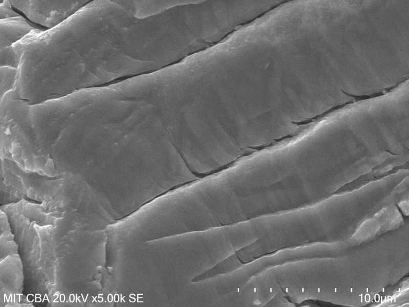

Fatigue Exploration
It is time to rebuild the 3RRR CPM and calibrate the stage using the previously discussed computer vision system. I'd like to replace all of the flexures, given that one experienced a fatigue failure and a second broke during deconstruction. I don't quite have enough flexures left to do this, so it's time to fabricate another batch. But before doing so, I want to dive a bit deeper into fatigue testing. Some of the literature on superelastic fabrication suggests surface finish is a key factor in crack nucleation, and getting this parameter right ends up being critical for long-term reliability of parts. One paper suggested that wire-EDM may not be a suitable manufacturing method at all, since it leaves surfaces macroscopically smooth but microscopically pitted.Previously, I tried hand-finishing a few flexures with an Arkansas stone and didn't see a huge increase in fatigue life, but my testing setup was sub-par. The easiest surface finish lever to pull is adding wire-EDM finishing passes; if this doesn't improve fatigue life, I could also consider a secondary grinding operation of some kind to improve surface finish. If it's a deeper metallurgical problem (i.e crack nuclation at grain boundaries), I could think about re-heat-treating the slabs or maybe consult with the material supplier, but my hope is that I can avoid those complications. Fatigue analysis is a deep subject worthy of deep study, but in the interest of time I'm looking for a simple solution for now.
First, I took a look at the failed and preserved broken flexure under the SEM. This was mostly exploratory (and an excuse to use the SEM, one of my favorite tools), but the examination revealed a few interesting tidbits. A survey of the whole fracture surface revealed quite a bit of heterogeneity; here are three representative micrographs at different locations, some of which show substantial cracking:
Zooming in a bit, I noticed characteristic parallel striations suggesting cyclic crack growth. The striations didn't point to a clear nucleation point, but were mostly observed to be near the surface of the material. If I were checking a cooking salmon fillet, I would pull the fish out of the oven at this point (and potentially apologize to my dinner guests):

Finally, I captured a few micrographs of the wire-EDMed surface of the flexure at a 45 degree angle. You can see clumps of resolidified material that cover most of the surface; the righthand side of the micrograph also seems to show base material with a few pits:
To better quantify (hopeful) improvements in fatigue life with different cutting parameters, I fabricated a cyclic bend tester for the 4411 Instron. The fixture uses a pair of bearings which allow the test arms to freely rotate; as the crosshead is moved up, this forces the flexure to open. Since I know the exact geometry of the test jig, it's simple enough to calculate the displacement required to achieve a given angle. If I were looking for quantified stress-strain data, pivots like this could be somewhat fraught and would ask for deeper tool characterization; in my case, I'm just interested in displacement-controlled cyclic loading, so as long as the bearings rotate freely I should be fine:
The two arms are secured using removable ground hardened pins (cut from a length of 8 mm linear rod stock) which are clipped in place using bits of bent brazing rod that fit into cut slots. The pins can be easily removed and replaced without putting any stress on the flexure itself, so swapping in new flexures can be done off-machine:
It's probably not critical in this application, but machining a clevis into each arm so it operates in double-shear provided a good excuse to use the Trak mill. I managed to locate a long 1/4" flat end mill. I ended up scrapping one part after pushing depth-of-cut way too far and getting a lot of tool distortion; I backed off to ~0.3 mm passes and got down to 28 mm without much trouble:
I installed an old flexure and ran a somewhat destructive "jog the machine 'til the sample breaks" test (making sure to stay well under the load cell limit) which demonstrates the mechanism nicely. Note that the final fracture occurs because the far corners of the arms contact each other, forcing the flexure into tension.
I'll continue to update this page as I gather data from testing.